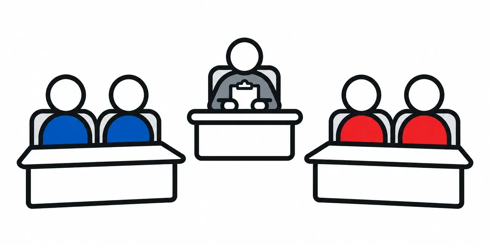

Debate 101: what policy debate is
Policy debate is a game between two teams of two. Each year has one topic, called the resolution. One team, the affirmative, proposes a plan that fits the topic. The other team, the negative, argues the plan is a bad idea, or that the affirmative did not do its job. Each person gives two speeches and asks and answers questions. At the end, the judge decides which team did the better debating, writes why, and gives each debater points.

The two teams
The affirmative ("aff") says yes to the resolution. It reads a plan: one sentence that says who does what. Then it gives reasons the plan is good. These reasons are called advantages.
The negative ("neg") says no. It does not have to defend one fixed thing. It can:
- argue the plan does not work, or does not solve a real problem;
- argue the plan causes something bad (a disadvantage);
- offer a different idea that is better (a counterplan);
- argue the plan is not on the topic (topicality);
- question the ideas behind the plan (a kritik).
Teams switch sides from round to round. Over a tournament, each team argues both sides.
The resolution
The resolution is one sentence for the whole season. It usually says that a government should make a big change in one area. The aff must fit its plan inside that sentence. The neg can argue that it does not fit. That fight is called topicality.
The speeches
There are eight speeches and four cross-examinations. Each debater gives one constructive speech (build arguments) and one rebuttal speech (answer what is left, and in the last two speeches, pick the best arguments and explain why they win).
The common high school format:
| Speech | Who | Time |
|---|---|---|
| 1AC: first affirmative constructive | 1st aff speaker | 8 min |
| Cross-ex of the 1AC | neg asks, aff answers | 3 min |
| 1NC: first negative constructive | 1st neg speaker | 8 min |
| Cross-ex of the 1NC | aff asks | 3 min |
| 2AC: second affirmative constructive | 2nd aff speaker | 8 min |
| Cross-ex of the 2AC | neg asks | 3 min |
| 2NC: second negative constructive | 2nd neg speaker | 8 min |
| Cross-ex of the 2NC | aff asks | 3 min |
| 1NR: first negative rebuttal | 1st neg speaker | 5 min |
| 1AR: first affirmative rebuttal | 1st aff speaker | 5 min |
| 2NR: second negative rebuttal | 2nd neg speaker | 5 min |
| 2AR: second affirmative rebuttal | 2nd aff speaker | 5 min |
Some leagues use different times (5-minute rebuttals are standard; some leagues use 6). Check the tournament's rules.
The "negative block." The 2NC and 1NR come back to back, with only a cross-ex between them. That is 13 minutes of neg speaking in a row. The neg usually splits the work: the 2NC takes some arguments, and the 1NR takes the rest. The 1AR then has 5 minutes to answer all of it. That is why the 1AR is often called the hardest speech.
The aff speaks first and last. The aff has to prove its case, so it gets the first word and the last word.
Cross-examination ("cross-ex" or "CX")
After each constructive, the other team asks questions for 3 minutes. Cross-ex is for:
- making sure you understand an argument;
- pinning down what the other team will and will not defend;
- setting up your own next speech.
Cross-ex is not a speech. What a debater says in cross-ex matters only if someone uses it in a later speech. Judges do listen, though, and good cross-ex often shapes the round.
Prep time
Each team gets a fixed amount of prep time for the whole round, often 8 or 10 minutes. A team uses it before any of its own speeches to plan. The judge, or a timekeeper, keeps track. When a team's prep time is gone, it must speak without more prep.
Evidence and cards
Debaters read evidence: short quotes from experts, called cards. A card has three parts:
- a tag: one sentence, written by the debater, that says what the card proves;
- a cite: who wrote it, when, and where;
- the text: the quote, with the key parts read out loud.
A card is only as good as what it really says. A judge can ask to see a card after the round. Most rounds today share speech documents, so the judge can read along.
Flowing
The flow is the notes of the round. Debaters and judges write each argument in a column for its speech, and draw lines to show which answer goes with which argument. The flow lets you see what each team said, and what the other team dropped (did not answer).
See How to flow.
Who wins: the ballot and the RFD
At the end, the judge fills out a ballot. The ballot has:
- the decision: which team won;
- the RFD (reason for decision): a short explanation of why;
- speaker points: a score for each debater.
How judges decide. Most judges ask: "Based only on what was said in this round, which team's arguments were better?" The judge does not add their own arguments. If one team makes an argument and the other team does not answer it, the judge usually treats that argument as true.
Judges have different views about which kinds of arguments matter most. A judge's view is called their paradigm. Many judges post a paradigm online before the tournament. See Judge paradigms.
A simple way to decide, for a new judge:
- Look at the last two speeches (2NR and 2AR). What did each team say is the most important issue?
- For each issue, which team had the better explanation and the better answers?
- Which issue matters most? The teams should tell you how to compare. That is called impact calculus. See Impact calculus.
- Vote for the team that won the most important issue. Write that in your RFD.
Speaker points
Each debater gets points for how well they spoke and argued. Most leagues use a scale near 25 to 30, with tenths allowed. Points reward clear speaking, smart choices, good cross-ex and respect for others. They are separate from the win. A team can lose the round and still get high points. See Speaker points.
Example in flow shorthand
A very short round, on one argument only. The aff says the plan saves money. The neg says the plan costs more than it saves.
1AC 1NC 2AC 2NR 2AR
Adv: plan Cost > savings 1. Savings come Ext cost. Their #1 Ext #2: cost is
saves $ (Analyst 21) in yr 2 (Expert 22) card only says 1-time, savings
2. Cost is 1-time "may" -> no savings repeat. 2NR
only dropped it.How to read it: the 2AC made two answers. The 2NR answered the first one, but never answered the point that the cost happens only once. A judge could vote aff because the 2AR extended a point the neg dropped.
Common mistakes
- New judges vote on what they believe, not on what was said. Fix: decide only from arguments made in the round. Your own view of the policy does not count.
- Debaters treat cross-ex as a speech. Fix: ask short questions and use the answers in your next speech.
- Debaters bring up new arguments in the 2NR or 2AR. Fix: the last two speeches extend and compare. Most judges ignore brand-new arguments there, unless they answer something new from the other team. (New answers in the 1NR and 1AR are normal.)
- Judges forget to time prep. Fix: start the prep clock when a team stops to prepare, and stop it when they are ready to speak.
- Writing an RFD that only says who won. Fix: name the issue that decided it, and why that team won it.
Related pages
- How to flow: take notes that let you decide the round.
- Speeches, order and times: the full list, with what each speech should do.
- The ballot and the RFD: how to write a fair, useful decision.
- Speaker points: what a 28 means.
- Stock issues: the basic jobs the aff has to do.
- Judge paradigms: the main ways judges decide.
Check your understanding
Draft check: it is waiting for a coach to review it.
4 short questions. Get them all right to finish this step. You can try again as many times as you want. No score is kept.
What comes after the 1NC?
The first negative speaker has just given the 1NC. The aff asks its cross-ex questions.
Which speech comes next, and which side gives it?
- The 2AC, given by the affirmative
- The 2NC, given by the negative
- The 1AR, given by the affirmative
- The 1NR, given by the negative
Show the answer
Answer: The 2AC, given by the affirmative
Why: The sides take turns in the constructives: 1AC, 1NC, 2AC, 2NC. After the 1NC and its cross-ex, the second aff speaker gives the 2AC.
The negative block
The 2NC has just ended, and the aff has asked its cross-ex questions.
Which speech comes next, and which side gives it?
- The 1AR, given by the affirmative
- The 1NR, given by the negative
- The 2AR, given by the affirmative
- The 2NR, given by the negative
Show the answer
Answer: The 1NR, given by the negative
Why: The 2NC and the 1NR come back to back. Together they are called the negative block. The neg usually splits its arguments between the two speeches.
After the block
The negative block (the 2NC and the 1NR) has just ended.
Which speech comes next, and which side gives it?
- The 1AR, given by the affirmative
- The 2NR, given by the negative
- The 2AR, given by the affirmative
- A cross-ex of the 1NR
Show the answer
Answer: The 1AR, given by the affirmative
Why: There is no cross-ex after a rebuttal. After the block, the first aff speaker gives the 1AR. It must answer all of the block in a short speech, so it is often called the hardest speech.
The last word
The round is almost over. The 2NR has just ended.
Which speech ends the round, and which side gives it?
- The 2NR, given by the negative
- The 2AR, given by the affirmative
- The 1AR, given by the affirmative
- There is no speech after the 2NR
Show the answer
Answer: The 2AR, given by the affirmative
Why: The aff speaks first (1AC) and last (2AR). The aff has to prove its case, so it gets the first word and the last word.